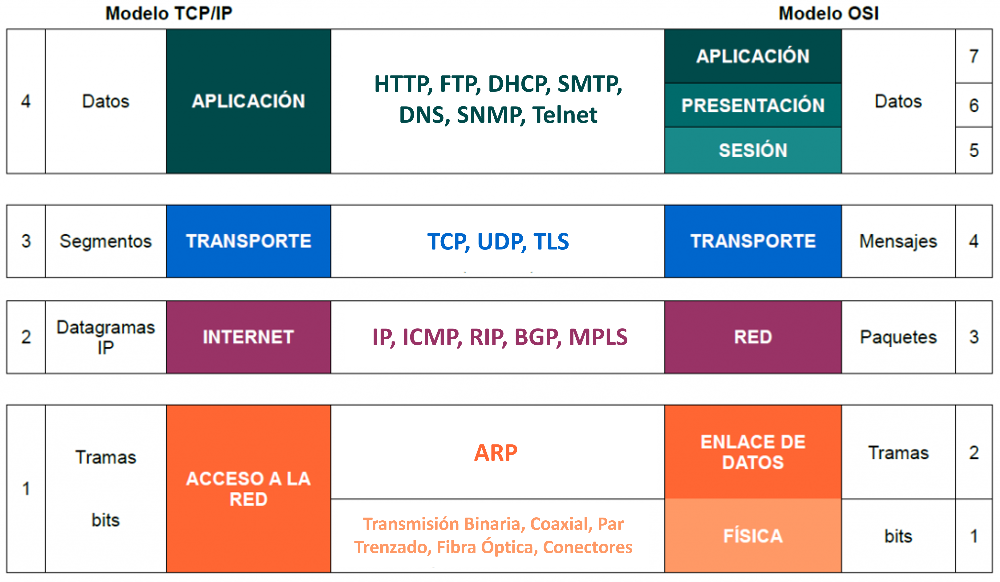
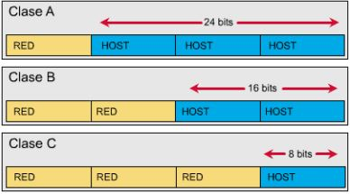
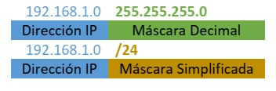
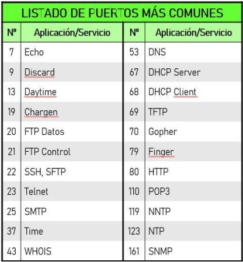
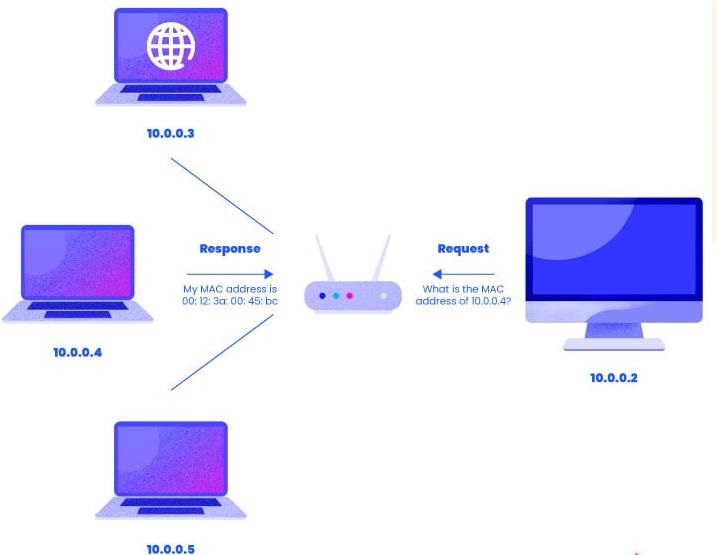
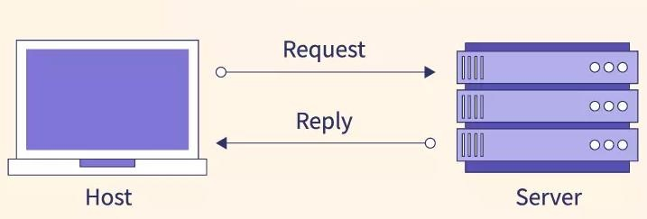
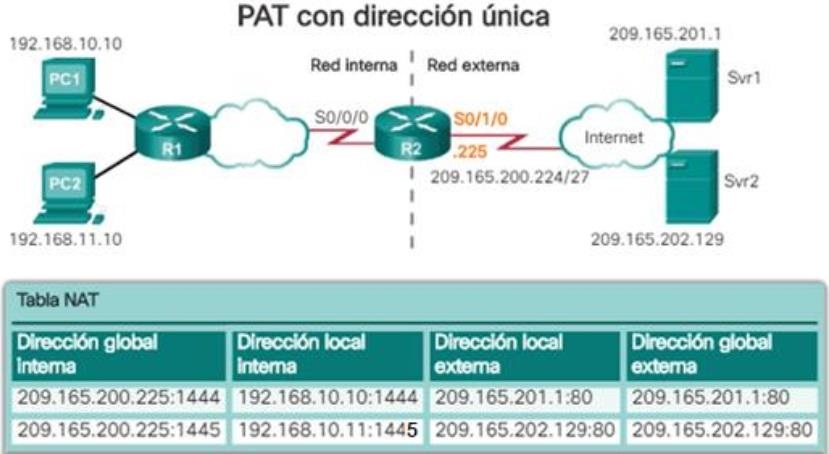
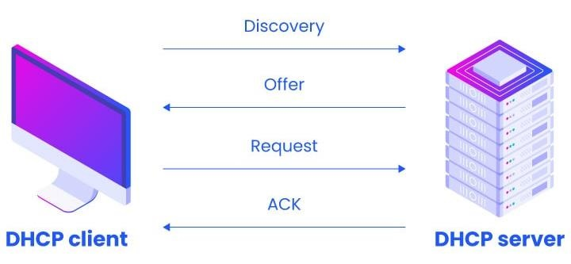

UD1: ELEMENTOS CLAVE DE UNA INFRAESTRUCTURA DE RED
- CE 1.1. Identificación y explicación de los elementos clave de la infraestructura de redes.
LOS MODELOS OSI Y TCP/IP
El modelo OSI (Open Systems Interconnection o Interconexión de Sistemas Abiertos) es un marco teórico de referencia creado por la Organización Internacional de Normalización (ISO) que divide el proceso de comunicación de datos en una red en siete capas independientes.
Su objetivo es servir como guía estándar para que diferentes tecnologías de hardware y software puedan comunicarse entre sí sin importar el fabricante.
Mientras que el modelo TCP/IP es el estándar práctico que define el conjunto de reglas y protocolos usados hasta la fecha para permitir la comunicación entre dispositivos a través de Internet y redes locales. Este se divide en cuatro capas y a continuación, vemos su corresponencia con el modelo OSI:

EL PROTOCOLO IP
¿QUE ES?
-
El protocolo IP (Internet Protocol) es uno de los más utilizados y más importantes de los que operan en la capa 3 del modelo OSI. Ya que permite la comunicación entre dispositivos conectados a redes distintas. Para ello, se le asigna una numeración a cada equipo, que lo identifica de forma úniva dentro de la misma red, conocida como dirección IP.
-
Una dirección IP consiste en un numero binario de 32 bits, divido en grupos de 4 octetos (8 bits; lo que implica que cada octeto podrá tomar valores de 0 hasta 255 como máximo), separados por puntos. La forma más común de representarla es en formato decimal, como por ejemplo 192.168.200.255
CLASES DE DIRECCIONES IP
- Según su numeración, distinguiremos 5 clases diferentes de direcciones IP:

DIRECCIONAMIENTO PRIVADO
- No obstante, dentro de cada clase existen rangos privados de direccionamiento. Estos rangos son los que usaremos cuando estemos configurando los dispositivos englobados en una misma red LAN y cuyas direcciones no deban ser visibles desde internet. Son los siguientes:

DIRECCIONAMIENTO RESERVADO
-
Además, también existen ciertos rangos de direcciones reservadas, que no deben usarse excepto para el uso que tienen asignados, como pueden ser el 127.0.0.0/8 que se utiliza para direcciones de Loopback, o el 0.0.0.0/0 que se utiliza como Ruta por Defecto.
-
Al resto de direccionamiento que no se incluye en los rangos privados y reservados, lo llamaremos direcciones públicas, que son las que se usan en Internet.
ESTRUCTURA DE UNA DIRECCIÓN IP
- En una dirección IP vamos a diferenciar 2 partes, la izquierda o identificador de red, y la derecha o identificador de host. Como se ha visto en la tabla anterior, dependiendo de la clase a la que pertenezca una dirección IP, su red tendrá un tamaño por defecto para cada una de esas partes, que sería el siguiente:

LA MÁSCARA DE RED
- Para indicarnos la cantidad de bits pertenece a cada una de estas partes, tenemos la máscara de red. Se trata de un indicador númerico con el mismo tamaño y distribución de bits que una dirección IP, y que suele indicarse a continuación de esta.
- Podemos expresarla tanto en formato decimal (similar a una IP) o en formato abreviado o CIDR (Classles Inter-Domain Routing), con un /N, siendo N el número de bits usados para el identificador de red. Lo vemos en el siguiente ejemplo:

LOS PUERTOS LÓGICOS
¿QUE SON?
- Son como interfaces virtuales que permiten la comunicación entre diferentes aplicaciones o servicios en una misma computadora o entre distintas computadoras a través de la red. Son identificadores númericos de 16 bits, a través de los cuales podemos conocer que servicio o protocolo se está usando.
TIPOS DE PUERTOS LÓGICOS
- Tanto en TCP como en UDP tenemos un total de 65535 puertos disponibles, tenemos una clasificación dependiendo del número de puerto a utilizar, que es la siguiente:
- Puertos conocidos: los puertos conocidos (well-known en inglés) van desde el puerto 0 hasta al 1023, están registrados y asignados por la Autoridad de Números Asignados de Internet (IANA), a los servicios y protocolos de red más comunes.
- Puertos registrados: los puertos registrados van desde el puerto 1024 hasta al 49151. La principal diferencia de estos puertos, es que las diferentes organizaciones pueden hacer solicitudes a la IANA para que se le otorgue un determinado puerto por defecto, y se le asignará para su uso con una aplicación en concreto.
- Puertos dinámicos: estos puertos van desde el 49152 hasta el 65535, este rango de puertos se utiliza por los programas del cliente y están constantemente reutilizándose. Este rango de puertos normalmente se utiliza cuando está transmitiendo a un puerto conocido o reservado desde otro dispositivo, como en el caso de web o FTP. Por ejemplo, cuando nosotros visitamos una web, el puerto de destino siempre será el 80 (HTTP) o el 443 (HTTPS), pero como puerto origen se usará uno dinámico.
PUERTOS MÁS USADOS

PRINCIPALES PROTOCOLOS DE RED
ARP (Address Resolution Protocol)
Es un protocolo de capa 2. Se encarga de asociar la dirección MAC de cada maquina, a su dirección IP.
Cuando un equipo intenta comunicarse por primera vez con otra maquina de su red, se envia previamente una "petición ARP", en forma de mensaje de broadcast a todos los equipos de la red. Pero solo responde el equipo que tenga la dirección IP que estamos buscando.
De este modo, cada equipo de la red irá generando una "tabla ARP" propia, donde se van registrando las direcciones MAC de cada máquina, asociadas a las direcciones IP que les correpsonde.

ICMP (Internet Control Message Protocol)
Es un protocolo de capa 3. Nos sirve para comprobar si tenemos conectividad con otro dispositivos de nuestra red o de otra distinta. Esto lo hace generando paquetes IP de un tamaño concreto y enviándolos a otra máquina de la red para ver si responde.
Herramientas como ping y traceroute utilizan ICMP para probar la disponibilidad de un destino, medir tiempos de respuesta o mostrar la ruta que siguen los paquetes.

DNS (Domain Name System)
Se considera un servicio de capa 7, y nos permite la comunicación con otros dispositivos de red, usando un nombre de dominio o alias, en lugar de una dirección IP. Evitando así tener que recordar la dirección IP de cada maquina, que sería mucho más complejo.
Para ello, tendremos configurado en nuestra red uno o más servidores DNS, a los cuales les enviaremos peticiones cada vez que nos comunicamos con otro equipo a través de su nombre de dominio; y estos realizaran la traducción de ese nombre o alias, a la dirección IP que le corresponde.
Este servicio funciona de manera totalmente transparente para el usuario.

NAT
Mecanismo mediante el cual podemos traducir una o varias direcciones IP privadas (locales), en una o varios IP públicas (globales) y viceversa. De esta forma, los equipos de una red local pueden acceder a internet sin que sus direcciones IP privadas sean visibles fuera de su red local.
A parte de esta, la principal función de NAT es la de conservar el espacio global IPv4 y evitar su agotamiento. Ya qué gracias a él, podemos conseguir que utilizando una sola IP pública, salgan internet todos los equipos de una red local. Distinguimos 3 tipos de NAT:
- NAT Estático: asigna de forma manual una dirección IP pública a una dirección privada. Mapeo “uno a uno” permanente.
- NAT Dinámico: consiste en asignar un grupo de direcciones públicas a una red local, de modo que los dispositivos podrán ir utilizando dinámicamente esas direcciones públicas para salir a internet y dejarlas libres cuando terminen. Mapeo “uno a uno” temporal.
- NAT con Sobrecarga: también conocido como PAT (Port Address Translation), permite asignar una IP pública a toda una red y que los dispositivos la utilicen de forma simultanea para salir a internet. Realizándose la diferenciación entre equipos por puertos. Mapeo “uno a varios”.

Aclaración
- Dirección local interna: la dirección de origen vista desde el interior de la red.
- Dirección global interna: la dirección de origen vista desde la red externa.
- Dirección global externa: la dirección del destino vista desde la red externa.
- Dirección local externa: la dirección del destino vista desde la red interna.
DHCP
Es un protocolo de capa 7. Nos permite configurar varios parámetros de conectividad (dirección IP, Máscara, Puerta de Enlace, Servidores DNS...) de manera automática, en las diferentes máquinas conectadas a una red.
Para ello, debemos configurar previamente uno de los equipos de red, para que ejecute dicho servicio, es decir, hará la función de servidor. De modo que cada vez que un equipo se conecte a dicha red, solamente tengamos que activar en él, la funcionalidad DHCP (Cliente, que generalmente viene habilitada por defecto) y realizará la petición de forma automática, obteniendo así su configuración de red, sin necesidad de hacerlo manualmente equipo por equipo.

DISPOSITIVOS DE RED
ESTACIÓN DE TRABAJO
Son ordenadores de alto rendimiento, que hacen de puntos terminales (endpoint) de la red. Desde ellos, los técnicos o administradores acceden a los diferentes recursos compartidos y centralizan la gestión y monitorización de los diferentes componentes del sistema.

SERVIDOR
Un servidor es un elemento de red (físico o virtual) que proporciona diferentes recursos (datos, servicios, software…) a otros dispositivos.
Una vez arrancado, se mantiene a la espera de peticiones de los “clientes” (equipos a los que presta servicios), y según le van llegando, las procesa y envía la respuesta correspondiente a cada una.
En cuanto a arquitectura física y en muchas ocasiones incluso en aspecto, no son muy diferentes a un PC normal; ya que cuentan con los mismos componentes básicos. Pero estos suelen tener un hardware más robusto, paraobtener un mayor rendimiento sobre los servicios prestados.

Si utilizamos dispositivos físicos dedicados para realizar la función de servidor, vamos a diferenciar tres tipos:
- TORRE: con forma y estructura iguales a las de un PC ordinario. son altamente escalables y el chasis se reserva para el espacio, con el fin de alojar discos duros, energía y otras expansiones redundantes.
- RACK: son pequeños en espacio, fáciles de administrar y se pueden instalar directamente en los racks o armarios de comunicaciones estándar. Suelen tener una altura de 1U a 4U.
- BLADE: es una plataforma de servidor pensada para servicios de alta disponibilidad y alta densidad. Su estructura principal consta de un gran chasis en el que se van insertando varios “blades”. El blade es en realidad una placa base del sistema, similar a un servidor separado, pudiendo arrancar cada uno su propio sistema operativo.
HUB
Son elementos hardware que permiten centralizar el cableado de varios equipos de red, funcionando como un punto central de conexión. Este dispositivo trabaja en capa 1 (Física), y por lo tanto no entiende o identifica la información que pasa por él, sino que simplemente repite la misma señal que recibe, a tantos puertos como equipos tenga conectados.
Todos los equipos conectados a un HUB se encuentran en el mismo dominio de colisión, es decir, cuando se produce una colisión porque dos máquinas envíen al mismo tiempo, las consecuencias de esta (parada y tiempo aleatorio de espera) la sufrirán todos los dispositivos conectados al concentrador. Si tuviéramos dos o más HUBS conectados entre sí, este dominio de colisión se ampliaría a todos ellos.
Un concentrador trabaja en todos sus puertos a la misma velocidad, que estará limitada (además de la velocidad a la que puedan trabajar los propios puertos del HUB) por la velocidad a la que pueda trabajar el equipo más lento de los que están conectados a él.

Es el elemento repartidor más básico y menos eficiente, pero también el más económico. Podemos diferenciar tres tipos de concentradores:
- Activos: necesitan conectarse a una fuente de alimentación externa, ya que además de repartir la señal, funciona como amplificador de señal.
- Pasivos: no necesitan ningún tipo de alimentación, ya que simplemente reenvían la señal a todos los dispositivos conectados.
- Inteligentes: también llamados Smart-HUB además de regenerar la señal, pueden detectar excesos de colisiones, gestión de alarmas y visor de prestaciones de red, entre otros.
Debido a sus limitaciones, es muy raro encontrar este tipo de equipos en una red actual. Ya que con la aparición de los SWITCHES, quedaron obsoletos
SWITCH
Su función es similar a la de un HUB, es decir, hacer de punto de interconexión entre varios equipos de red, pero con la gran diferencia de que tienen la capacidad de procesar la información que pasa a través de ellos.
Decimos que son dispositivos que operan en el nivel 2 del modelo OSI, ya que se basa en las direcciones MAC de los equipos que tiene conectados, para reenviar la información por el puerto correspondiente en cada caso. Evitando así los reenvíos de información innecesaria que ocurren cuando usamos un HUB.
También existen algunos más avanzados, llamados “SWITCH MULTICAPA” que además implementan funcionalidades de capa 3, propias de un ROUTER.

Suelen contar con gran cantidad de puertos, comúnmente los encontramos de 5, 8, 16, 24 y 48.
Otra de las ventajas que tiene frente a un HUB, es que los SWITCHES, no funcionan como un medio compartido, si no que gestionan la velocidad de cada dispositivo por puertos.
Lo mismo ocurre con los dominios de colisión, de modo que cada puerto se comporta como un dominio de colisión independiente.
ROUTER
Son equipos que trabajan en el nivel o la capa 3 del modelo OSI. Y su principal función es la de encaminar los datos de la manera más eficiente, entre redes diferentes.
Esto lo hacen basándose en las direcciones IP de origen y destino. Para ello, cada ROUTER mantiene una tabla con información de cada red que conocen, ya sea por que la tienen directamente conectada o porque les llega a través de algún protocolo de enrutamiento. Es lo se conoce como “tabla de rutas” o “tabla de enrutamiento”.
En un ROUTER, cada puerto funciona como un dominio de colisión independiente, pero además como un dominio de broadcast independiente.

PUNTO DE ACCESO
Es un dispositivo que recibe una conexión de internet por cable (Ethernet) y la convierte en una señal inalámbrica Wi-Fi.
Trabaja principalmente en la Capa 1 (Física) por la transmisión de ondas de radio y en la Capa 2 (Enlace de Datos) porque gestiona las tramas y usa direcciones MAC para identificar los dispositivos en la red local.

Permite ampliar la cobertura de la red de forma estable, ya que crea una nueva señal WiFi limpia, como si fuera el router original. Además, gestiona el tráfico entre los dispositivos sin cables y el resto de la red cableada simultaneamente.
FIREWALL
Son elementos de red (pueden ser hardware o software) diseñados para controlar el tráfico entrante y saliente de una red. Generalmente diremos que son dispositivos que operan en las capas 3 y 4 del modelo OSI, aunque hoy en día existen algunos más avanzados que trabajan hasta en la capa 7.
En todos los caso, van a contar, como mínimo, con dos interfaces de red (ya sean físicas o lógicas), una interna para la red protegida o LAN privada; y otra externa para la red ajena o pública.
Su funcionamiento se basa en dos reglas básicas: PERMITIR y DENEGAR. Las cuales se aplicaran en cada caso, según si el tráfico cumple o no una serie de condiciones preestablecidas por el administrador de red.